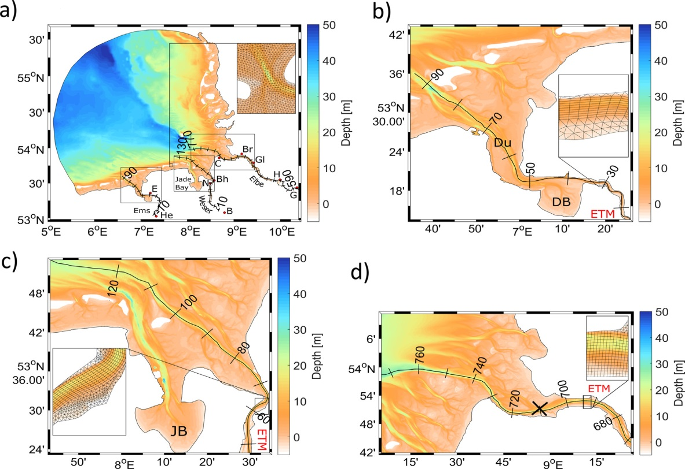

Coastal processes in the German Bight
Context and issue at stake
Coastal areas in the North Sea and more specifically in the German Bight are subject to continuously developing activities such as wind farming, transportation, river regulations, transport, etc. The resulting environmental changes interplay with the ones caused by the local natural variability and interaction with the open ocean. Coastal areas are also known as typical representatives of most active biogeochemical interactions between land and ocean, sediment dynamics and morphodynamics. The small temporal and spatial scales of processes is challenging for the provision of sufficient and credible high-resolution 4D observations. Therefore, the mix between modelling and observations is considered as the most efficient tool to develop up-to-date coastal products, among them predictions and state estimates of coastal and estuarine state, and scientific support of activities and decision making. The role of numerical modelling is a central one. One major research direction is to shorten the gap between the regional ocean and coastal/estuarine modelling and to ensure seamless interfaces between CMEMS and regional operational predictions. This is demonstrated in our German Bight case study.
 German Bight (a) and the three estuaries studied here (b, c, d). Boxes in (a) identify the positions of individual estuaries (b, c, d). The insets illustrate the model grid in areas of high resolution.
Description of modelling tools
We will use the GCOAST (Geesthacht Coupled cOAstal model SysTem), which is built upon a flexible and comprehensive coupled model system, integrating the most important key components of the regional and coastal systems that enable to include information from observations. It encompasses: (i) atmosphere-ocean-waves interactions, (ii) the dynamics and fluxes in the land-sea transition, (iii) the coupling of the marine hydrosphere and biosphere. It is based on novel numerical modelling concepts, integrating structured (NEMO) and unstructured and adaptive grids (SCHISM) hydrodynamical models, wave model (WAM), hydrological model. The regional model area covers the north-east Atlantic, the North Sea and the Baltic Sea the coastal area is the German Bight. Both regional and coastal NEMO models are on-line coupled to the wave model WAM using OASIS interface. We will, in particular, test NEMO’s ability to describe coastal circulation in tidal areas subject to wetting and drying as, for instance, the German Bight shallow area.
Details of what will be tested
We will assess the skills of the new NEMO developments in the region of German Bight in an inter-comparison study analysing the performance of the different circulation models. The impact on near coastal circulation and estuarine frontal structures will be demonstrated. We will evaluate the impact of the wave-current interaction and wetting/drying parameterizations. The results will be validated against newly available in-situ data, CMEMS products, in-situ measurements and satellite observations. The results are relevant to sediment transport, search and rescue, and oil spill response coastal applications.
Team members
The ‘Costal processes in the German Bight’ case study will be carried out by Joanna Staneva, Sebastian Grayek and Benjamin Jacob at the Institute for Coastal Research, HZG in Germany. Joanna is a head of Department of Hydrodynamics and Data Assimilation. She is a physical oceanographer and modeller who combines expertise in circulation and wave modelling, ocean predictions, coupled model systems, modelling of marine environment, coastal and regional oceanography, synergies between models and observations. Sebastian focuses on the development and application of coupled GCOAST system and coastal scales downscaling from NEMO and waves at regional and coastal scales, data assimilation. Benjamin’s field of expertise is in implementing and applying the unstructured-grid model for the German Bight, coastal ocean processes and validations of models against observations.